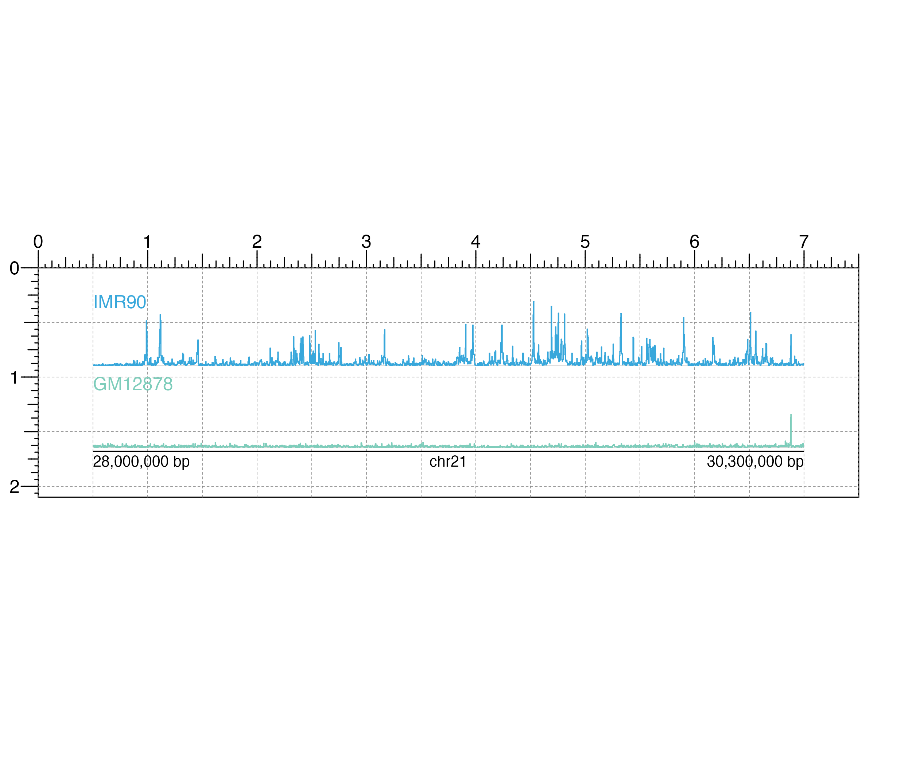
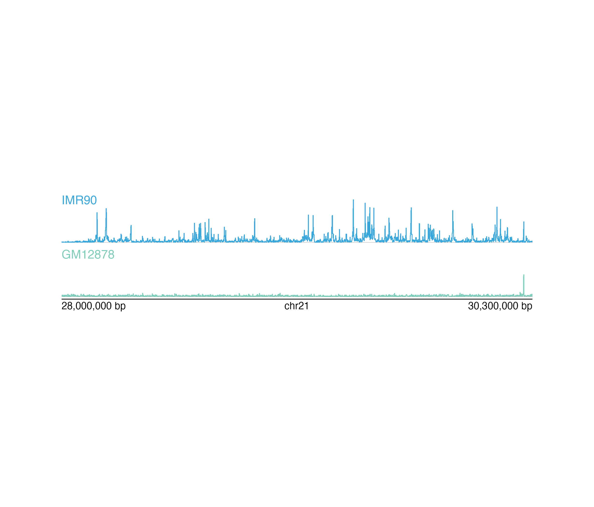

Plot any kind of signal track data for a single chromosome
bbPlotSignal( data, binSize = NA, binCap = TRUE, negData = FALSE, chrom, chromstart = NULL, chromend = NULL, assembly = "hg38", linecolor = "#37a7db", fill = NA, ymax = 1, range = NULL, scale = FALSE, bg = NA, baseline = TRUE, baseline.color = "grey", baseline.lwd = 1, orientation = "h", x = NULL, y = NULL, width = NULL, height = NULL, just = c("left", "top"), default.units = "inches", draw = TRUE, params = NULL, ... )
| data | Data to be plotted as a character value specifying a
bigwig file path, a dataframe in BED format, or a
GRanges object with metadata column |
|---|---|
| binSize | A numeric specifying the length of each data
bin in basepairs. Default value is |
| binCap | A logical value indicating whether the function will
limit the number of data bins to 8,000.
Default value is |
| negData | A logical value indicating whether the data has both
positive and negative scores and the y-axis should be split.
Default value is |
| chrom | Chromosome of region to be plotted, as a string. |
| chromstart | Integer start position on chromosome to be plotted. |
| chromend | Integer end position on chromosome to be plotted. |
| assembly | Default genome assembly as a string or a
bbAssembly object.
Default value is |
| linecolor | A character value or vector of length 2 specifying the
line color(s) outlining the signal track(s).
Default value is |
| fill | A character value or vector of length 2 specifying
the fill color(s) of the signal track(s). Default value is |
| ymax | A numeric specifying the fraction of the max y-value
to set as the height of the plot. Default value is |
| range | A numeric vector of length 2 specifying the y-range of data to plot (c(min, max)). |
| scale | A logical value indicating whether to include a data
scale label in the top left corner of the plot.
Default value is |
| bg | Character value indicating background color.
Default value is |
| baseline | Logical value indicating whether to include a
baseline along the x-axis. Default value is |
| baseline.color | Baseline color.
Default value is |
| baseline.lwd | Baseline line width.
Default value is |
| orientation | A string specifying signal track orientation.
Default value is
|
| x | A numeric or unit object specifying signal plot x-location. |
| y | A numeric, unit object, or character containing a "b" combined with a numeric value specifying signal plot y-location. The character value will place the signal plot y relative to the bottom of the most recently plotted BentoBox plot according to the units of the BentoBox page. |
| width | A numeric or unit object specifying signal plot width. |
| height | A numeric or unit object specifying signal plot height. |
| just | Justification of signal plot relative to its (x, y) location.
If there are two values, the first value specifies horizontal justification
and the second value specifies vertical justification.
Possible string values are: |
| default.units | A string indicating the default units to use if
|
| draw | A logical value indicating whether graphics output should be
produced. Default value |
| params | An optional bbParams object containing relevant function parameters. |
| ... | Additional grid graphical parameters. See gpar. |
Returns a bb_signal object containing relevant
genomic region, placement, and grob information.
#A signal track can be placed on a BentoBox coordinate page by providing plot placement parameters:
bbPlotSignal(data, chrom, chromstart = NULL, chromend = NULL, x, y, width, height, just = c("left", "top"), default.units = "inches")
This function can also be used to quickly plot an unannotated signal track by ignoring plot placement parameters:
bbPlotSignal(data, chrom, chromstart = NULL, chromend = NULL)
## Load signal data library(BentoBoxData) data("IMR90_ChIP_H3K27ac_signal") data("GM12878_ChIP_H3K27ac_signal") ## Create a page bbPageCreate(width = 7.5, height = 2.1, default.units = "inches")## Define region region <- bbParams( chrom = "chr21", chromstart = 28000000, chromend = 30300000, assembly = "hg19", range = c(0, 45) ) ## Plot and place signal plots signal1 <- bbPlotSignal( data = IMR90_ChIP_H3K27ac_signal, params = region, x = 0.5, y = 0.25, width = 6.5, height = 0.65, just = c("left", "top"), default.units = "inches" )#>signal2 <- bbPlotSignal( data = GM12878_ChIP_H3K27ac_signal, params = region, linecolor = "#7ecdbb", x = 0.5, y = 1, width = 6.5, height = 0.65, just = c("left", "top"), default.units = "inches" )#>## Plot genome label bbPlotGenomeLabel( chrom = "chr21", chromstart = 28000000, chromend = 30300000, assembly = "hg19", x = 0.5, y = 1.68, length = 6.5, default.units = "inches" )#>## Add text labels bbPlotText( label = "IMR90", fonsize = 10, fontcolor = "#37a7db", x = 0.5, y = 0.25, just = c("left", "top"), default.units = "inches" )#>bbPlotText( label = "GM12878", fonsize = 10, fontcolor = "#7ecdbb", x = 0.5, y = 1, just = c("left", "top"), default.units = "inches" )#>